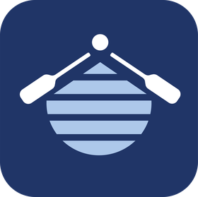

AstraVia
Improve the way your business works.
AstraVia helps organisations improve operational workflows, connect the technology they already use, automate repetitive work and build custom systems where existing tools fall short.
Start with the operation. Use technology where it adds value.
Built around real world delivery
AstraVia combines engineering, software and hands on business experience to improve how real organisations work day to day.
Founder led, hands on delivery
Work directly with the person responsible for understanding the problem, shaping the solution and delivering it.
Operational and business experience
Experience building and running products, processes, sales and operations, not just designing software around them.
Engineering led problem solving
Understand how the process, people, systems and data fit together before deciding what needs to change.
Specialist support where needed
Small enough to move quickly, with additional design, development and specialist expertise brought in when a project requires it.
← swipe for more →
What we do
We start with how work happens today, find where time and effort are being lost, then work out the simplest way to improve it. Sometimes that is a better process, sometimes it means connecting existing technology, and sometimes something new needs to be built.
Operational workflow & process improvement
Understand how work actually happens, identify friction, duplicated effort and manual workarounds, then redesign the process around a clearer way of working.
Technology integration & connected systems
Connect the tools, data and systems you already use so information can move properly between them without people having to bridge the gaps manually.
Automation & AI
Use automation and AI where it can genuinely remove repetitive work, speed up a process or make better use of existing information.
Custom software & internal tools
When existing software does not fit the problem, build the missing piece, from internal tools and dashboards to operational platforms, web apps and mobile applications.
The solution depends on the problem.
Not every problem needs new software. The aim is to find the simplest solution that makes a meaningful difference.
Improve a process
Remove unnecessary steps, clarify responsibilities and make the existing workflow easier to run.
Connect existing tools
Link spreadsheets, forms, databases, email, cloud software and other systems so they work together properly.
Automate repetitive work
Reduce manual checking, copying, chasing, data entry and other work that does not need a person doing it every time.
Build something bespoke
Where existing products genuinely do not fit, design and build the tool, system or application that is missing.
How we work
Understand the real problem, design the right system, build quickly, then improve based on real use.
Discover
Understand how the process works today, who is involved, where information lives, what is taking too much time and where the real friction sits.
Design
Work out the best way to improve it, whether that means changing the process, connecting existing systems, introducing automation or building something new.
Engineer
Implement the right combination of workflows, integrations, automation, data tools and custom software.
Deploy & iterate
Put it into real use, see how it performs and improve it around what actually happens day to day.
Problems we solve
Most organisations don't need technology for its own sake. They need clearer systems and tools that fit how people actually work.
Too much manual admin
Staff are copying, checking, chasing or reentering the same information.
Disconnected tools
Existing systems do part of the job, but people are the workaround between them.
Poor visibility
Useful information exists, but it's not easy to report on or act on.
Processes that no longer fit
What worked at one stage is now slowing everything down.
Manual workarounds everywhere
People are bridging gaps between systems with copy and paste, emails, reminders, duplicate data and processes that depend on someone remembering the next step.
Software that nearly fits
Off the shelf tools help, but still leave gaps and manual workarounds.
A fair question
Why not just use off the shelf software?
Sometimes you should. If an existing tool solves the problem well, that's usually the fastest, most cost effective answer. But many organisations reach a point where standard tools nearly work, while staff are still copying data, managing exceptions manually or building awkward workarounds. AstraVia helps in that gap: improving the process, connecting the tools, and building custom software only where it genuinely adds value. The same logic applies to AI: sometimes an agent is exactly the right tool for a repetitive task, sometimes it's overkill for what's really a two step fix. We help you tell the difference, rather than reaching for it by default.
Proof in practice
A few examples of where AstraVia has turned operational problems and product ideas into working systems.
Safeguarding & medical information
WrapAroundCare4u
Critical information for nearly 3,000 children needed to be easier to manage, update and access across the organisation. We built a custom frontend and backend system, supported by easy to use spreadsheet workflows.
Reduced manual admin and made a time heavy process much easier to run.
Read the full storySales & operations automation
Kompact9
A small product business needed to expand retail outreach without spending days manually searching for stockists. We built a web scraping and spreadsheet integrated research tool to do it for them.
Turned manual research into a repeatable sales process, saving hundreds of hours.
Read the full story
Real time performance app for rowing
RowCoach
Rowing performance data is often locked behind expensive specialist hardware or fragmented across separate tools. We built a mobile app combining GPS tracking, stroke rate detection, heart rate integration and live data sharing.
Real time training insight through a simpler, lower cost system.
Read the full storyNew products & ideas
Alongside operational improvement work, AstraVia helps turn new technical ideas into working products, from an early concept and prototype through to something that can be tested with real users.
Real time apps & data tools
Mobile and web apps that capture, process and share live data: GPS, sensors, performance metrics and dashboards.
Automation & research tools
From web scraping and data extraction to spreadsheet automation, turning repetitive work into repeatable process.
Integrated products
When a project involves hardware, sensors or physical products, we support the pathway through to the software that makes it work.
Founder led, specialist supported
Clients work directly with the person understanding, shaping and delivering the solution, with trusted specialist support brought in when a project needs it.
Direct senior input
No layers of account management between the problem and the person shaping the solution.
Professional structure
Delivery through AstraVia Ltd, with clear scope, invoicing and support.
Scalable support
Specialist design, development or implementation support added where the project requires it.
Who this is for
AstraVia is a good fit for organisations where the way work gets done has become more complicated than it needs to be, or where technology is moving faster than the systems and processes around it.
We help businesses simplify how they operate, make better use of the technology already available, and introduce new tools where they can create a genuine advantage, without changing things just for the sake of keeping up.
Ways to work together
Projects can start small or scale into larger systems, depending on the problem and how quickly you want to move.
Operational & technology review
Review how an existing process works, identify friction and manual work, and highlight the most useful opportunities for improvement.
Workflow improvement sprint
Take one operational problem and improve it through process changes, integration, automation or a lightweight technical solution.
Automation & integration project
Connect existing tools or automate a defined workflow to remove repetitive work and make information flow more effectively.
Custom system or product build
Design and build a larger internal system, operational platform, web or mobile application where something bespoke is genuinely required.
Is there a part of your operation that should work better?
Let's talk through how it works today, where the friction is, and whether the answer is a better process, connected tools, automation or something built specifically for you.